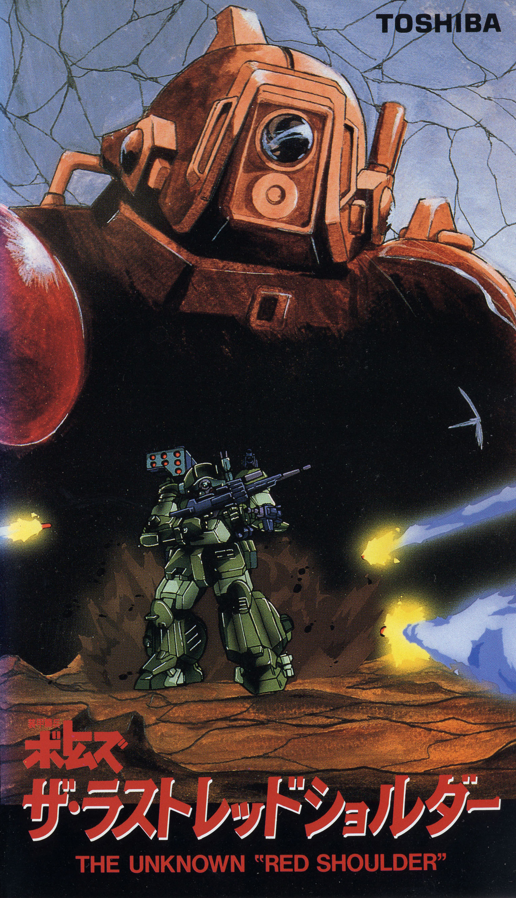
PRODUCTION INFORMATION
This OVA tells a critical part of the story between the TV show's UOODO and KUMMEN arcs. Although the TV series covered what the "Red Shoulders" are in some detail, we didn't get to see much of Chirico's time there, or the people involved. In this OVA, there is plenty of room for both of those things to be explored.
Although written and animated over a year after the end of the original TV series, this story slots perfectly between episodes 13 and 14; a transition point between those two arcs. THE LAST RED SHOULDER expands on the characterization of Chirico Cuvie, the protagonist of the TV series as well as the other characters, providing background information and twists that fill several of the story holes left vacant by the TV series at the time.
This OVA was also was adapted into a light novel called THE LAST RED SHOULDER by the OVA's scriptwriter, Souji Yoshikawa.
Release Date: August 21, 1985
Director: Ryosuke Takahashi
Studio: Sunrise
STORY
Somewhere on some unknown planet, Chirico and a trio of former Red Shoulders puruse the man who cast them out; Yoran Pailsen. They are not prepared for the deadly consequences of Pailsen's involvement with the Secret Society, which has produced perhaps the most dangerous opponent Chirico will ever face in his life.
What lies ahead in Chirico's journey into hell?
CAST AND CREDITS
Original Work: Ryosuke Takahashi
Direction: Ryosuke Takahashi
Script/Screenplay: Souji Yoshikawa
Mechanical Design: Kunio Okawara
Character Design: Norio Shioyama
Soundtrack: Hiroki Inui
Storyboard: Mitsuko Kaze and Katsuyoshi Yatabe
Animation Direction: Norio Shioyama
Nechanical Animation Direction: Toru Yoshida
Episode Direction: Mitsuko Kaze
Art Direction: Mitsuharu Miyamae
IMAGE GALLERY
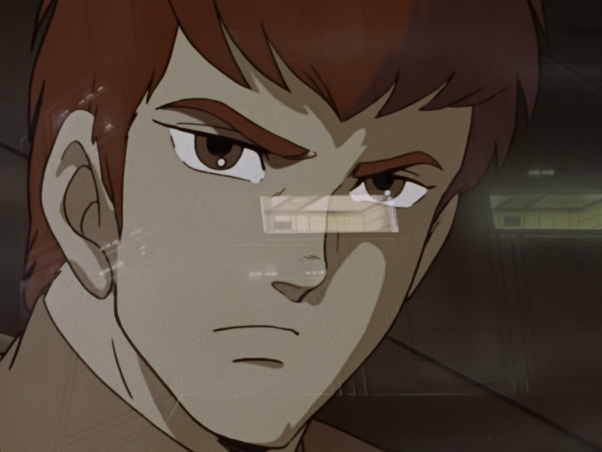
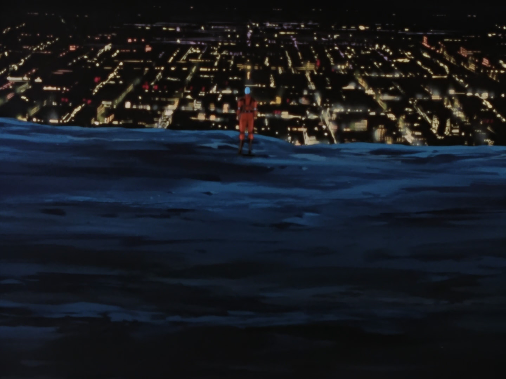
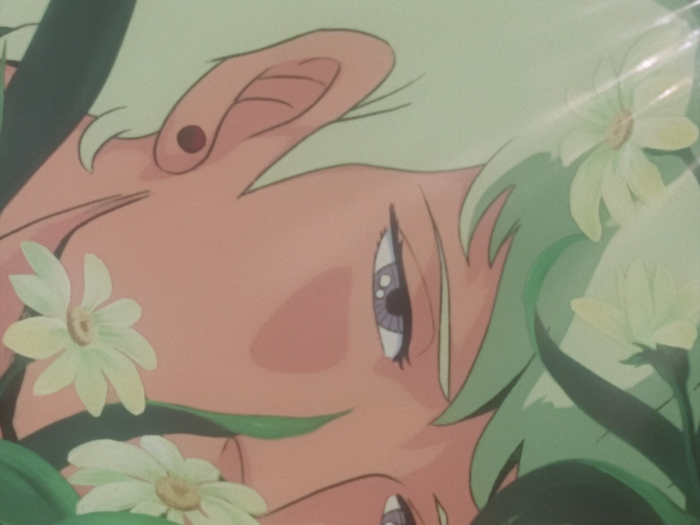
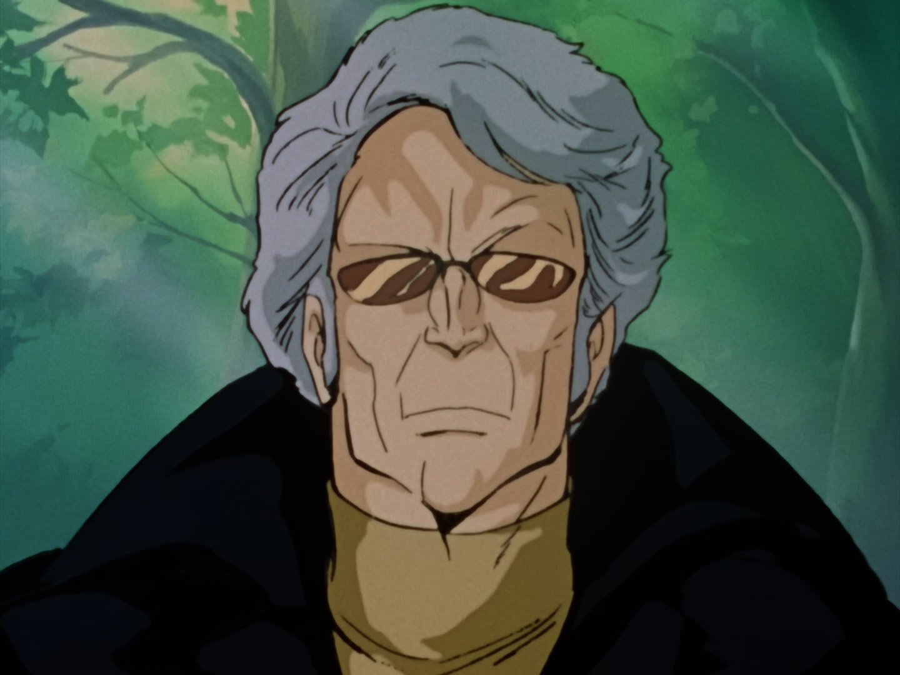
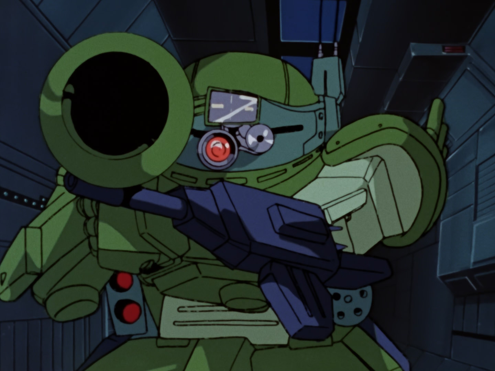
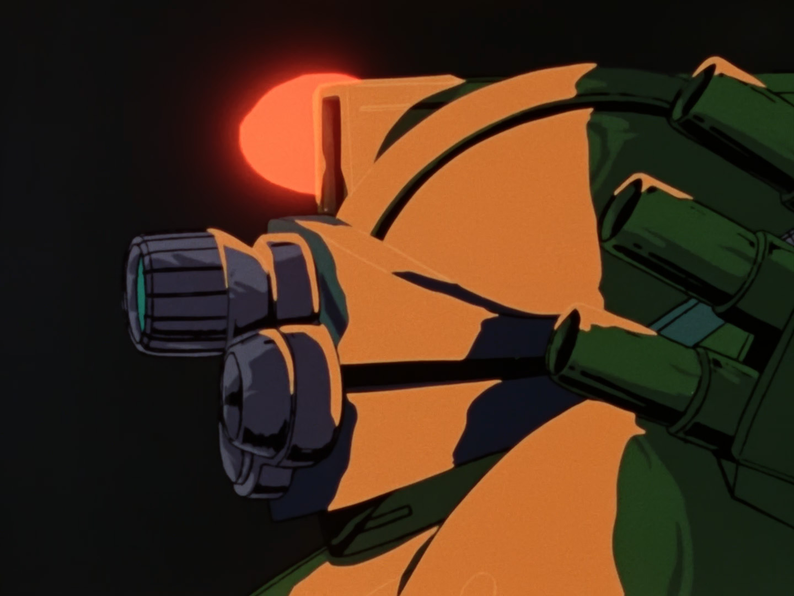
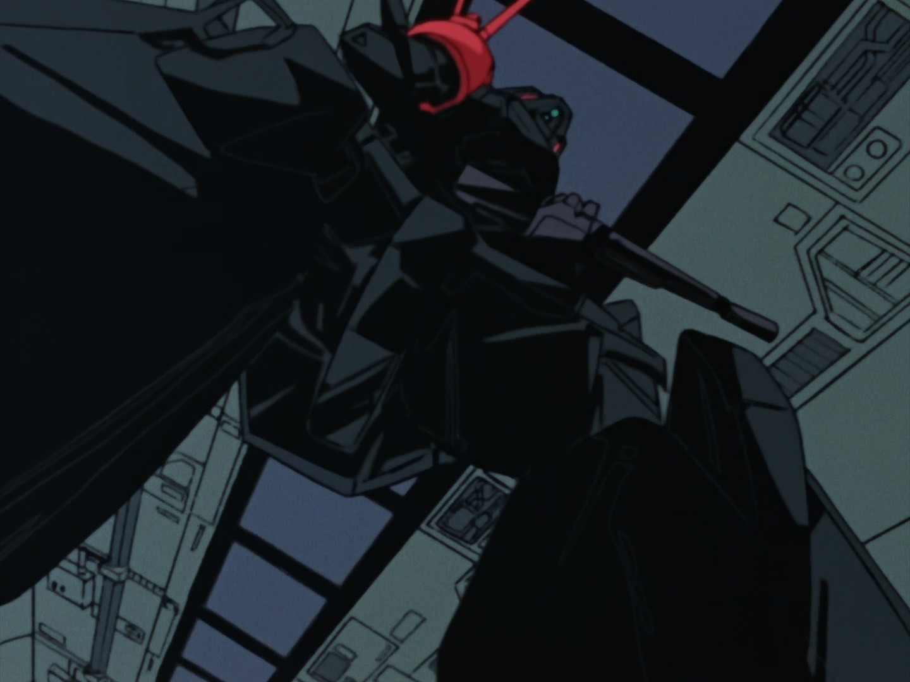
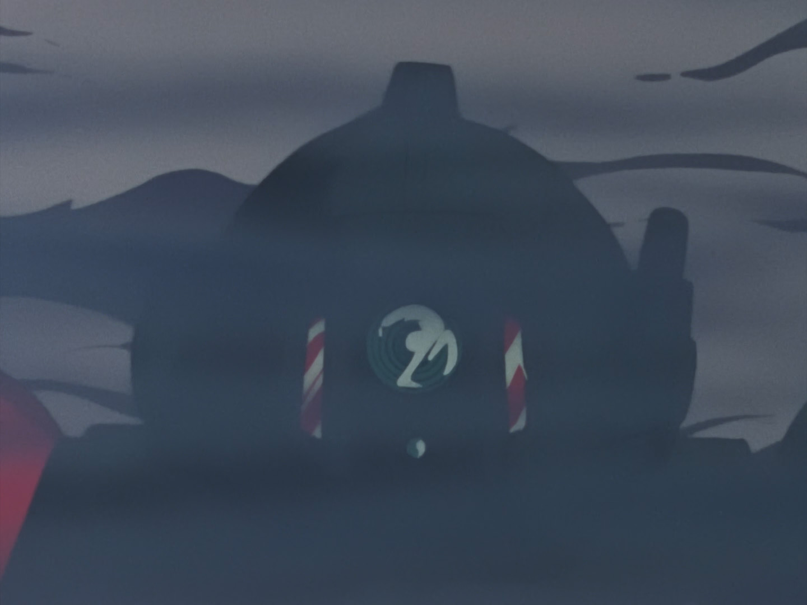
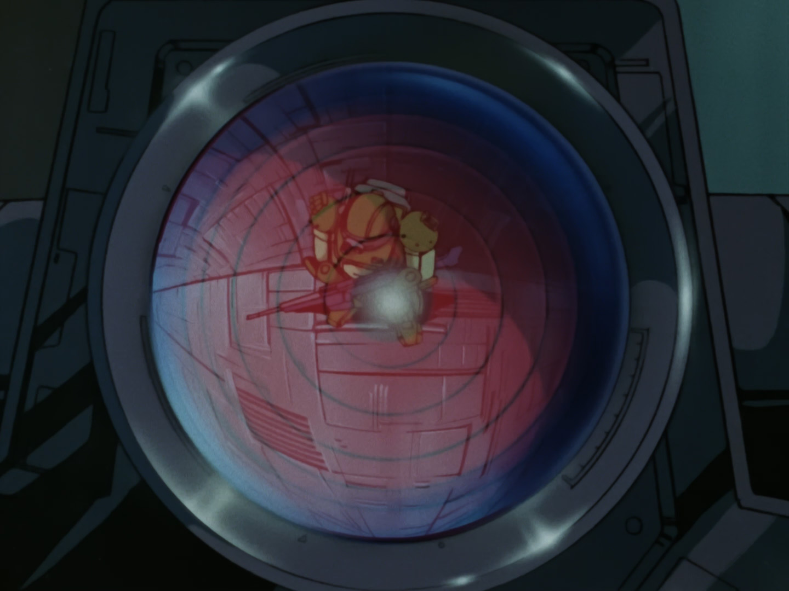
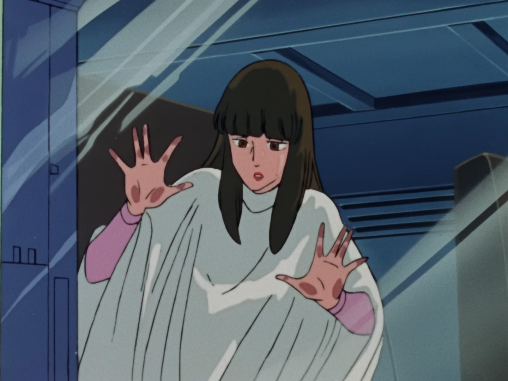
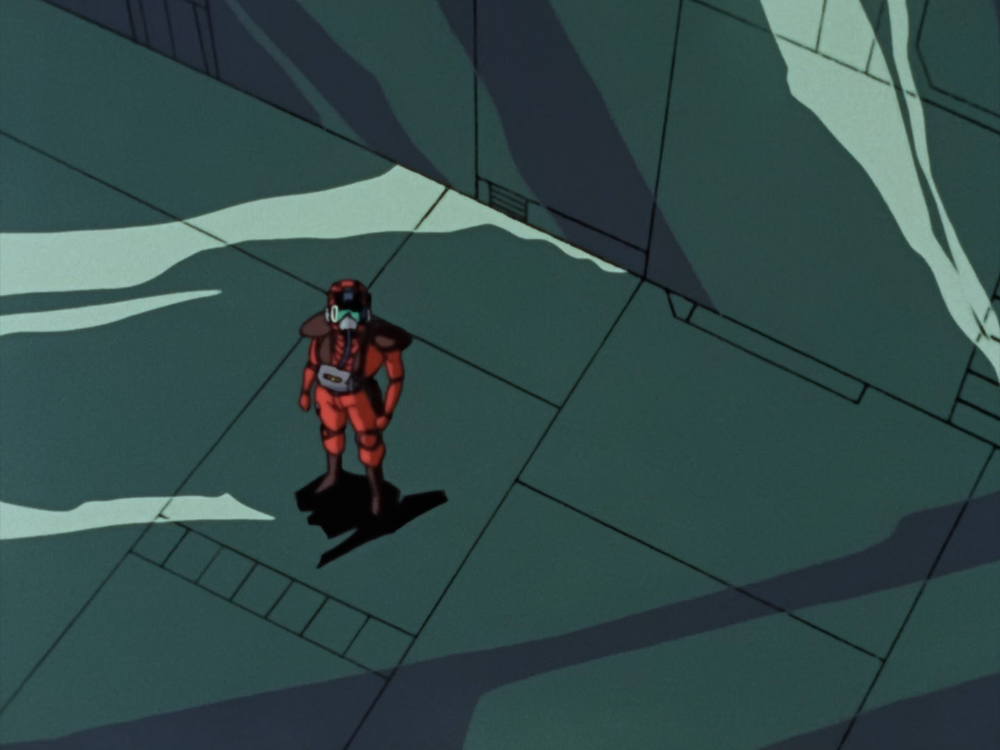
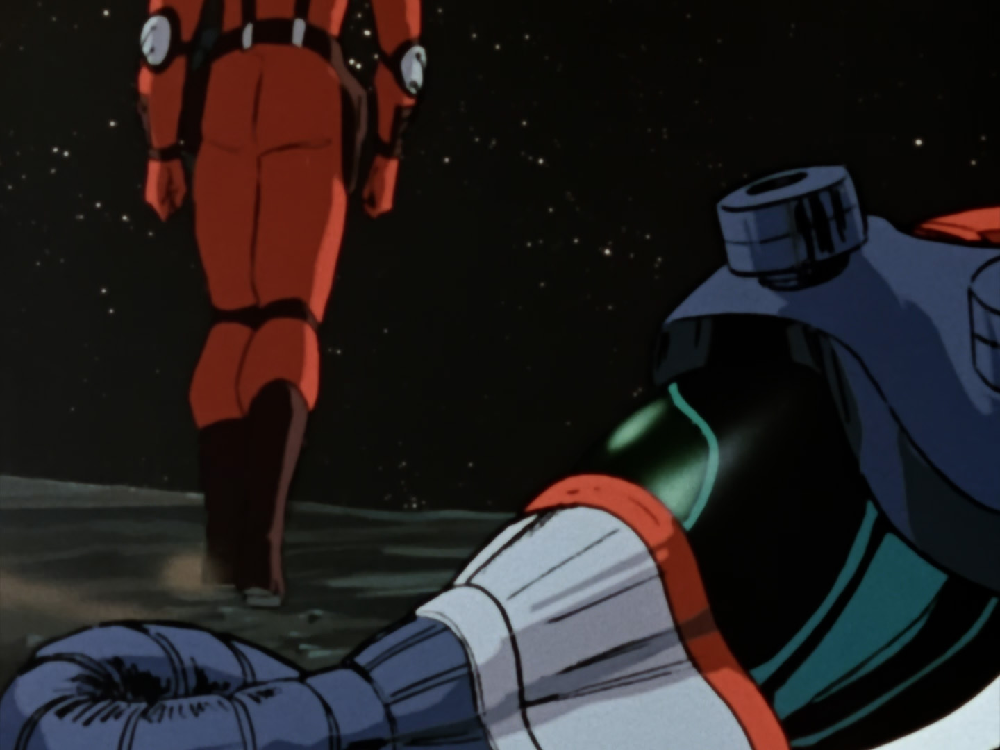